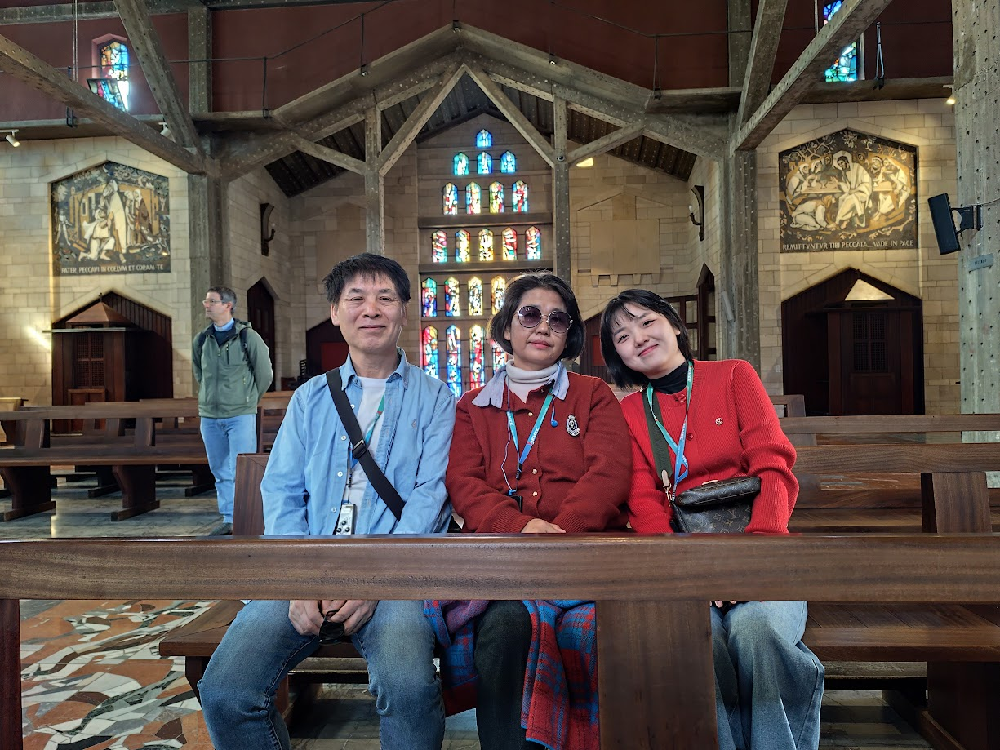
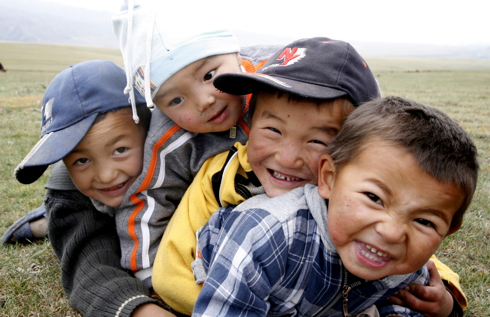
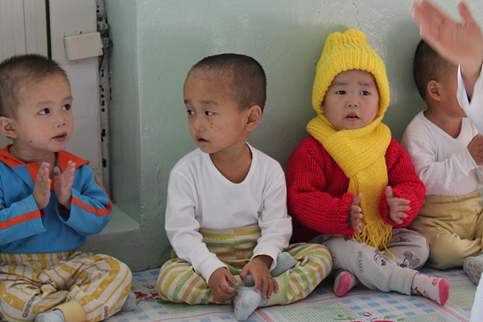
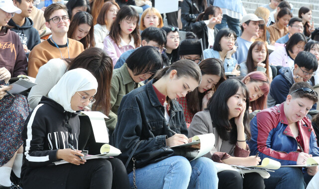

- 5박6일간의 선교사 Re-Breath 프로그램
- 안식과 나눔, 도움의 연결
- 가족 여행 지원
- Healing Table – 아름다운 식탁 교제

하나님 나라를 위해 헌신하여 긴 고난과 고통을 치유하며 사역했던 선교사들을 떠올립니다. 하나님을 향한 마음과 열정들을 볼 때마다 함께 돕고자 합니다.
하나님께서 치유와 회복, 그리고 재파송의 은혜가 ICHTHYS SOLACE를 통해 넘치기를 소망합니다.
ICHTHYS SOLACE 대표 양건호


ICHTHYS SOLACE는 하나님의 사랑이 필요한 이웃의 임시 쉼터로, 고통 가운데 나아가도록 돕는 예수님의 선한 공동체입니다.
ICHTHYS(물고기)는 예수님을, SOLACE(위로)는 고통 가운데서도 하나님의 뜻을 이루는 사명을 담고 있습니다.
우리는 이들이 복음을 만나 새 삶을 살아가도록 함께합니다.
쉼에서 재파송으로,
치유에서 사명으로!
From Rest to Recommission,
From Healing to Mission
소명을 잃은 사역자들이 온전히 회복되도록
복된의 고리, 그들이 만나 변화를 경험하도록
Healing Today, Sending Tomorrow

